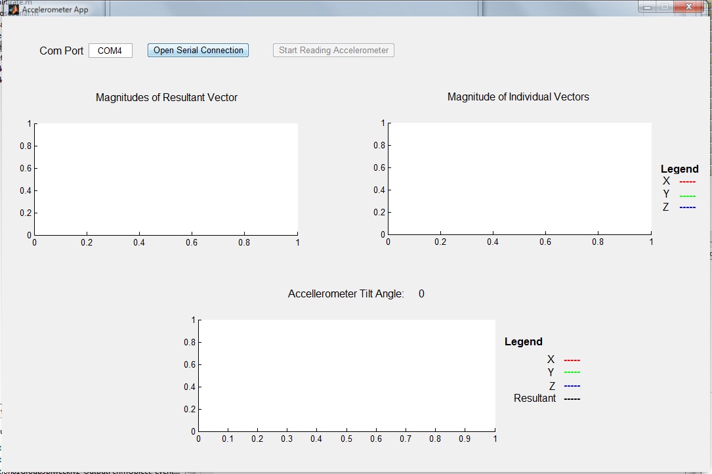

function varargout = Section61Group9Biweekly2(varargin)
gui_Singleton = 1;
gui_State = struct('gui_Name', mfilename, ...
'gui_Singleton', gui_Singleton, ...
'gui_OpeningFcn', @Section61Group9Biweekly2_OpeningFcn, ...
'gui_OutputFcn', @Section61Group9Biweekly2_OutputFcn, ...
'gui_LayoutFcn', [] , ...
'gui_Callback', []);
if nargin && ischar(varargin{1})
gui_State.gui_Callback = str2func(varargin{1});
end
if nargout
[varargout{1:nargout}] = gui_mainfcn(gui_State, varargin{:});
else
gui_mainfcn(gui_State, varargin{:});
end
function Section61Group9Biweekly2_OpeningFcn(hObject, eventdata, handles, varargin)
handles.output = hObject;
guidata(hObject, handles);
set(handles.togglebutton2,'Enable','off');
function varargout = Section61Group9Biweekly2_OutputFcn(hObject, eventdata, handles)
varargout{1} = handles.output;
function togglebutton1_Callback(hObject, eventdata, handles)
if(get(hObject,'Value'))
set(handles.togglebutton2,'Enable','on');
set(hObject,'String','Close Serial Connection');
comPort = get(handles.edit1,'String');
if (~exist('serialFlag','var'))
[accelerometer.s,serialFlag] = setupSerial(comPort);
end
if(~exist('calCo', 'var'))
calCo = calibrate(accelerometer.s);
handles.accelerometer = accelerometer;
handles.calCo = calCo;
guidata(hObject,handles);
end
else
set(handles.togglebutton2,'String','Start Reading Accelerometer');
set(handles.togglebutton2,'Value',0);
set(handles.togglebutton2,'Enable','off');
set(hObject,'String','Open Serial Connection');
closeSerial();
end
function togglebutton2_Callback(hObject, eventdata, handles)
if(get(hObject,'Value'))
accelerometer = handles.accelerometer;
calCo = handles.calCo;
set(hObject,'String','Stop Reading Accelerometer');
buf_len = 200;
gxdata = zeros(buf_len,1);
gydata = zeros(buf_len,1);
gzdata = zeros(buf_len,1);
index = 1:buf_len;
xlabel('Time');
ylabel('Magnitude');
title('Complete magnitude representation of the accelerometer sensor data');
while(get(hObject,'Value'))
axes(handles.axes3);
[gx gy gz] = readAcc(accelerometer, calCo);
cla;
line([0 gx], [0 0],[0 0], 'Color', 'r', 'LineWidth', 2, 'Marker', 'o');
line([0 0], [0 gy],[0 0], 'Color', 'g', 'LineWidth', 2, 'Marker', 'o');
line([0 0], [0 0],[0 gz], 'Color', 'b', 'LineWidth', 2, 'Marker', 'o');
line([0 gx], [0 gy],[0 gz], 'Color', 'black', 'LineWidth', 2, 'Marker', 'o');
limits = 2.5;
axis([-limits limits -limits limits -limits limits]);
axis square;
theta = atand(gy/gx);
set(handles.text5,'String', num2str(theta, '%.0f'));
gxdata = [gxdata(2:end) ; gx];
gydata = [gydata(2:end) ; gy];
gzdata = [gzdata(2:end) ; gz];
gmdata = gxdata+gydata+gzdata;
axes(handles.axes1);
plot(index,gmdata,'black');
axis([1 buf_len -3.5 3.5]);
xlabel('time');
ylabel('Magnitude of the resultant acceleration');
axes(handles.axes2);
plot(index,gxdata,'r', index,gydata,'g', index,gzdata,'b');
axis([1 buf_len -3.5 3.5]);
xlabel('time');
ylabel('Magnitude of individual axes acceleration');
drawnow;
end
else
set(hObject,'String','Start Reading Accelerometer');
end
function edit1_Callback(hObject, eventdata, handles)
function edit1_CreateFcn(hObject, eventdata, handles)
if ispc && isequal(get(hObject,'BackgroundColor'), get(0,'defaultUicontrolBackgroundColor'))
set(hObject,'BackgroundColor','white');
end
